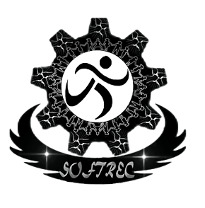

- It’s the oldest club of MCA which was introduced in the year 1989.
- SOFTREC stands for Students OF Tiruchirappalli Regional Engineering College.
- SOFTREC acts as a bridge between the current batches and the alumni batches.
- It is an association which maintains a world-wide interaction between the previous batches and the present batches
- The community is expected to be a portal for knowledge & education and to forge relationships with NITT Students.